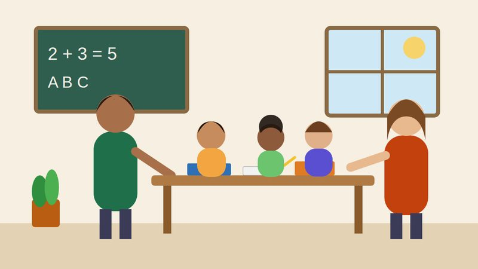

Seja voluntário
Doe algumas horas por semana dando aulas, cozinhando, cuidando da horta ou ajudando em eventos.
Instituto Mãos que Semeiam

Desde 2014, o Instituto Mãos que Semeiam atua na Zona Leste de Manaus com educação, alimentação e inclusão digital. Acreditamos que cada pessoa carrega uma semente de transformação, e que ela floresce quando encontra cuidado e oportunidade.
Somos uma organização da sociedade civil, sem fins lucrativos, formada por moradores, educadores e voluntários que decidiram cuidar do próprio bairro. Tudo começou com uma turma de reforço escolar em uma garagem; hoje são quatro projetos permanentes.
Promover o desenvolvimento de crianças, jovens e famílias em situação de vulnerabilidade social por meio da educação, da segurança alimentar e da inclusão digital.
Ser referência em transformação comunitária no Amazonas até 2030.
Doe algumas horas por semana dando aulas, cozinhando, cuidando da horta ou ajudando em eventos.
Doações únicas ou mensais mantêm os projetos funcionando o ano inteiro.
Compartilhar os projetos com amigos e empresas amplia a rede de apoio.